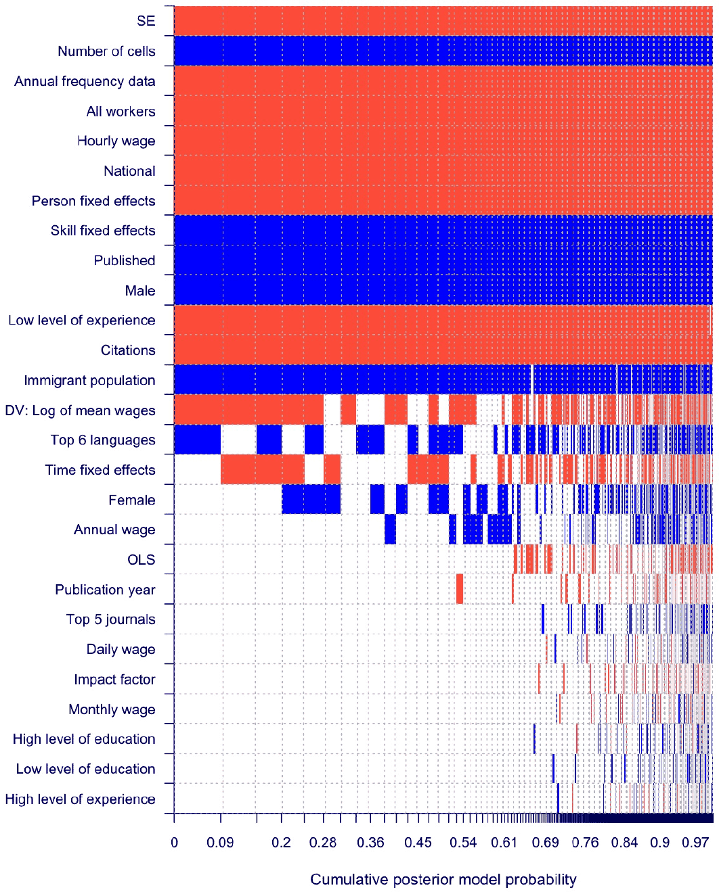

The Elasticity of Substitution between Native and Immigrant Labor: A Meta-Analysis
Klara Kantova, Tomas Havranek, Zuzana Irsova, Jiri Schwarz (2026), "The Elasticity of Substitution between Native and Immigrant Labor: A Meta-Analysis." Charles University, Prague. Available at meta-analysis.cz/migrant.
Klara Kantovaa, Tomas Havraneka,b,c, Zuzana Irsovad, and Jiri Schwarzd
aInstitute of Economic Studies, Charles University, Prague
bCentre for Economic Policy Research, London
cMeta-Research Innovation Center at Stanford
dAnglo-American University, Prague
July 23, 2026
JEL Codes: J15, J61, C83
Abstract
This paper presents the first comprehensive meta-analysis of the elasticity of substitution between native and immigrant labor, drawing on 1,091 estimates from 41 studies. We find strong evidence of selective reporting: less precise estimates are systematically associated with lower reported elasticities. Correcting for this bias using meta-regression and selection methods raises the implied elasticity from about 13 to about 22, implying about 40% less relative-wage pressure from immigration than uncorrected results suggest. Bayesian and frequentist model averaging show that heterogeneity is driven mainly by geographic scale, data granularity, and whether the sample is restricted to low-experience workers, while the choice between log mean wages and mean log wages plays a secondary role. Our best-practice estimates, which net out publication bias and prioritize the most granular data, imply an elasticity of about 17 in our baseline regional specification, lower than implied by a simple bias correction but substantially higher than the uncorrected mean.
Keywords: elasticity of substitution, immigration, native labor, meta-analysis, publication bias, selective reporting
1. Introduction
The elasticity of substitution between native and immigrant labor, , is the structural parameter that governs how an inflow of foreign workers feeds through to native wages and employment. When the two groups are close substitutes, immigrants compete with comparable natives and put downward pressure on their pay. When they are complements, an inflow can raise native productivity and earnings. Most quantitative claims about who gains and who loses from immigration rest, explicitly or implicitly, on a value of . Pinning it down is therefore the empirical question on which the wage and employment effects of immigration ultimately turn.
Empirical estimates of span a wide range, and the field has remained divided on their interpretation since the exchange between Borjas (2003) and Card (2001) over whether immigrants compete directly with comparable natives or fill complementary roles. Card (1990) found little sign that the Mariel influx depressed native wages in Miami, a reading Borjas (2017) disputed using narrower subgroup analyses. Ottaviano & Peri (2012) and Manacorda et al. (2012) place the parameter at imperfect but economically meaningful substitutability. Dustmann et al. (2016) and Edo (2019) trace the disagreement to method: Edo (2019) sorts the literature into structural education-experience cell models, spatial correlation designs, and national skill-cell approaches, each of which can deliver a different from the same data. Pekkala Kerr & Kerr (2011) adds that the effects are uneven across workers, falling hardest on less-educated natives and earlier immigrant cohorts. With estimates this dispersed and so closely tied to research design, a quantitative synthesis is needed to recover what the literature collectively implies.
The theoretical drivers of these elasticities are equally diverse. Borjas et al. (2011) highlights that wage impacts depend on the interplay between substitution across skill levels and substitution within skill cells. While some US evidence suggests skilled immigrants and natives may be perfect substitutes (e.g., Borjas et al., 2008), Peri & Sparber (2011) and Peri (2011) argue they are imperfect substitutes because they specialize in different tasks as immigrants often concentrate on quantitative and analytical skills, while natives focus on interactive and communication-based roles. Yet, despite these theoretical insights, reported elasticities in primary studies range from 6 to over 500.
Primary studies often cannot estimate the structural elasticity directly. Data limitations, model complexity, or identification concerns often lead researchers to estimate related labor market effects, such as the wage impacts of immigration, without recovering the elasticity itself. In such cases, the elasticity is frequently parameterized using values from existing studies, including meta-analytic syntheses of related labor-market elasticities (Elminejad et al., 2023). However, as Aubry et al. (2026) show in their comprehensive meta-analysis of nearly 3,000 reduced-form wage estimates, methodological choices significantly shape reported results. If these parameters are miscalibrated, it can distort empirical conclusions and policy simulations. This highlights the need for a systematic synthesis of the empirical literature that corrects for publication bias and explains the underlying heterogeneity.
Meta-analysis provides a formal framework for distilling patterns from such fragmented findings (Stanley, 2001). While the work by Aubry et al. (2026) offers a vital assessment of total wage impacts, it does not isolate the structural elasticity of substitution. Our paper addresses this gap by conducting the first comprehensive meta-analysis of elasticity based on 1,091 estimates from 41 primary studies. In doing so, we follow a growing tradition of using meta-analysis to calibrate fundamental structural parameters, such as the capital-labor elasticity of substitution (Gechert et al., 2022) and the Armington elasticity (Bajzik et al., 2020). We apply a wide array of graphical and meta-regression techniques to recover bias-corrected estimates that better approximate the underlying elasticity. We also systematically investigate sources of heterogeneity using both Bayesian and frequentist model averaging. Following Havranek et al. (2024), we focus on the negative inverse elasticity (), which we hereafter refer to as the coefficient. Reported elasticities of roughly 6 to 500 correspond to coefficients between about and . This parameter is the most commonly reported and is typically derived from specifications that use relative labor supply as the main source of variation. To ensure comparability within the meta-regression framework, we exclude estimates reported directly as the elasticity rather than as the inverse-elasticity coefficient (), because such estimates typically lack the standard errors required for meta-regression or would require inversions that violate the assumptions of publication bias tests (Havranek et al., 2024). This screen is applied estimate by estimate: a study whose results are reported only as directly stated elasticities (e.g., Angioloni et al., 2022) is excluded in full, whereas a study that also reports usable inverse-elasticity coefficients is retained for those estimates and so still appears in our list of included studies (Table A1).1
Three main findings emerge. First, the literature is consistent with substantial selective reporting. We find that less precise estimates are systematically associated with more negative reported values (lower substitutability). Because the correlation between the reported coefficients and the inverse square root of the sample size is negligible (), this pattern reflects selective reporting based on precision rather than a "small-study" effect driven by sample size (Irsova et al., 2025). After correcting for this bias, the implied elasticity rises from an uncorrected average of 13 to approximately 22. This increase is economically meaningful because a higher elasticity implies a smaller relative-wage response to a given change in relative labor supply. Under the standard inverse-elasticity relationship, a 10% increase in immigrant labor relative to native labor lowers immigrant wages relative to native wages by about 0.77% when , but only by about 0.45% when . The correction thus reduces the implied relative-wage pressure by roughly 40%.
Second, our results demonstrate that much of the variation in reported estimates is driven by identifiable data features. Reported substitutability tends to be higher in studies with larger immigrant shares and a finer division of the labor market into worker groups, or cells, defined by combinations of education, experience, region, gender, and time. Specifically, as researchers increase the number of cells, reported substitutability rises. This suggests that low-resolution models with fewer cells may aggregate distinct labor markets, potentially masking the true degree of competition. Conversely, studies using annual data frequency or hourly wages report lower substitutability. Building on these findings, we calculate a best-practice estimate that nets out publication bias while prioritizing the most granular data available, with hourly wages and annual data frequency. We identify an elasticity of approximately 17 for regional models and 8 for national models.
Third, we revisit the methodological debate regarding the transformation of the dependent variable, i.e., the log of mean wages versus the mean of log wages. While the raw descriptive averages mirror the debate between Borjas et al. (2012) and Ottaviano & Peri (2012), our analysis reveals that this choice is a significant, albeit secondary, driver of heterogeneity. This suggests that the wage definition is a systematic factor that researchers must calibrate alongside other data features, and does not invalidate previous findings.
The remainder of the paper proceeds as follows. Section 2 describes the data collection process and variables, providing a detailed definition of our data granularity measures. Section 3 assesses and accommodates potential selective reporting using both linear and advanced techniques. Section 4 explores the drivers of heterogeneity using Bayesian and frequentist model averaging, including an analysis of the wage-definition debate. This section also derives our best-practice estimates, demonstrating how conditioning on the most granular data available shifts the implied elasticity. Section 5 contextualizes the findings within the broader immigration policy debate and concludes.
2. Data
The elasticity of substitution between immigrant and native labor is mathematically defined as:
where and are the quantities of immigrant and native labor employed, and and are their respective wages. This definition shows how the ratio of immigrant to native labor changes in response to changes in their relative wages (Borjas & Van Ours, 2010).
Standard economic theory implies a nonnegative elasticity of substitution between immigrant and native workers: when immigrants become relatively cheaper, their relative employment should not fall. Negative estimates of are possible in empirical work, but they are difficult to interpret, since they imply that a decline in immigrants' relative wage would be associated with lower relative immigrant employment. Kearney (1997) and Bowles (1970) disregard such values as estimation artifacts, though Ribó & Vilalta-Bufí (2020) suggests they may indicate extreme complementarity.
2.1. Collecting the Elasticity Dataset
To gather our estimates, we searched Google Scholar using combinations of the keywords "elasticity of substitution," "immigrant," "labor," and "native." By January 31, 2025, we reviewed 960 records and collected 1,091 estimates from 41 studies. In Appendix A, we provide the detailed list of included studies (Table A1) and the PRISMA diagram (Figure A1), which outlines our specific inclusion and exclusion criteria.
Following Havranek et al. (2024), we focus on the negative inverse elasticity, , as relative labor supply variations are generally more exogenous than wage changes. The baseline specification is the Constant Elasticity of Substitution (CES) production function:
where and are native and immigrant labor, and are factor-augmenting technologies, and is the native labor share. From this, . The estimated equation in primary studies is:
where is the native wage premium, is the relative labor supply, and captures other factors, such as skill-specific technology shocks and fixed effects. This follows the structural approach widely adopted in the literature (e.g., Borjas, 2003; Ottaviano & Peri, 2012; Manacorda et al., 2012). In this log-linear specification, the coefficient on relative labor supply, , represents the inverse elasticity of substitution. A more negative coefficient implies that immigrants and natives are less substitutable, as an increase in immigrant supply leads to a larger drop in their relative wages (i.e., a higher native wage premium). Of the 41 studies in our dataset, 26 adopt the log of mean wages, while 18 use the mean of log wages.2 Among the latter, key examples include Borjas et al. (2010), Borjas et al. (2012), and Card (2009), who argue that this specification better captures individual-level wage variation. In contrast, Ottaviano & Peri (2012) use log of mean wages, which Borjas et al. (2012) critiques for overstating negative impacts.
Initially, we collected a comprehensive set of potential moderators. However, to ensure robust identification and avoid misleading inference, we excluded variables with insufficient variation (i.e., means below 0.03 or above 0.97). This process resulted in a final set of 27 moderator variables spanning data characteristics, structural variations, estimation techniques, fixed effects, and publication characteristics. One of our key variables is the number of cells used in the structural estimation, which represents the product of education and experience groups (and sometimes region, year, and/or gender). This variable serves as a measure of data granularity. For instance, the national skill-cell approach popularized by Borjas (2003) typically uses 192 cells (8 experience groups × 4 education groups × 2 genders × 3 census years). In the data, we also include the percentage of foreign-born population in the respective country, the number of citations, journal impact factor, and publication year. Table 1 presents summary statistics for the sample, showing simple means without correcting for publication bias, and provides insights into the elasticity of substitution between immigrant and native labor across various subsamples and characteristics. In the Appendix, specifically Table B1, we define these variables along with their simple mean, standard deviation, and mean weighted by the inverse of the number of estimates reported per study.3
As noted in the Introduction, the variation in these estimates is not strongly correlated with sample size. Specifically, the correlation between the reported coefficients and the inverse square root of the sample size is near zero (). This suggests that the observed reporting pattern is linked more closely to estimate precision than to a traditional "small-study" effect driven by sample size. We also examined the impact of potential outliers by applying winsorization at the 1%, 2.5%, and 5% levels. Since the results remained stable across all levels, no winsorization was ultimately applied.
The overall mean of the reported coefficients () in our sample is , which corresponds to an implied elasticity of 13.3. To account for the influence of studies reporting multiple results, we also compute a weighted mean where each observation is weighted by the inverse of the number of estimates per study. This weighted mean coefficient is slightly more negative at , implying an elasticity of 12.9.4 Consistent with the imperfect-substitution reading of Ottaviano & Peri (2012), this magnitude indicates a significant degree of imperfect substitutability. Functionally, it implies that relative wages respond only modestly to shifts in relative labor supply. Under a structural parameter of 13, a 10% increase in immigrant labor relative to native labor lowers the immigrant-to-native wage ratio by approximately 0.77% (%). However, substantial variation exists across different subsamples, suggesting that factors such as data characteristics, worker type, estimation techniques, and publication sources significantly influence the reported coefficients.
The choice of dependent variable transformation, specifically the log of mean wages versus the mean of log wages, represents a significant methodological divide in the literature. Theoretically, due to Jensen's Inequality, , using the log of mean wages may overstate the wage impact of immigration by downplaying within-group variation, potentially leading to a downward bias in the estimated elasticity of substitution.5 This choice is central to the debate between Borjas et al. (2012) and Ottaviano & Peri (2012), where the transformation is argued to be a primary driver of differing elasticity estimates. While we revisit this debate formally in our heterogeneity analysis, our data suggest that this technical choice is often bundled with other methodological preferences. Specifically, the "Borjas vs. Ottaviano" divergence likely stems from a broader modeling philosophy, where the preference for national-level structural models often coincides with specific wage definitions, rather than the wage transformation in isolation.
Figure 1 shows a box plot of the reported coefficients across individual studies, sorted by publication year, illustrating variations across studies (variation across countries is depicted in Figure A2 and the summary statistics in Table A2). Notably, studies by Wei et al. (2016) and Wei et al. (2019) focus on farm workers, explaining their distinct reported coefficients. The distinctiveness in these coefficients arises from the specific nature of farm work, which often involves labor-intensive tasks requiring particular physical endurance and skills typically found among younger workers (Wei et al., 2016, 2019).
| Variable | N | Unweighted Mean | Unweighted | Unweighted 95% conf. int. | Weighted Mean | Weighted | Weighted 95% conf. int. | ||
|---|---|---|---|---|---|---|---|---|---|
| All estimates | 1,091 | -0.075 | 13.3 | -0.08 | -0.07 | -0.077 | 12.9 | -0.08 | -0.07 |
| Data characteristics | |||||||||
| Annual frequency data | 488 | -0.11 | 9.2 | -0.12 | -0.10 | -0.11 | 9.4 | -0.12 | -0.09 |
| Lower frequency data | 603 | -0.05 | 20.8 | -0.05 | -0.04 | -0.05 | 22.1 | -0.05 | -0.04 |
| Structural variation | |||||||||
| All workers | 603 | -0.09 | 11.4 | -0.10 | -0.08 | -0.09 | 10.9 | -0.10 | -0.08 |
| Full-time workers | 488 | -0.06 | 16.8 | -0.06 | -0.05 | -0.06 | 17.3 | -0.06 | -0.05 |
| High level of experience | 42 | -0.06 | 17.0 | -0.07 | -0.05 | -0.04 | 22.6 | -0.06 | -0.03 |
| Low level of experience | 79 | -0.12 | 8.4 | -0.16 | -0.08 | -0.12 | 8.3 | -0.16 | -0.08 |
| High level of education | 106 | -0.08 | 13.0 | -0.09 | -0.06 | -0.05 | 19.8 | -0.07 | -0.04 |
| Low level of education | 171 | -0.06 | 15.5 | -0.07 | -0.06 | -0.07 | 13.7 | -0.08 | -0.06 |
| English | 735 | -0.07 | 13.6 | -0.08 | -0.07 | -0.09 | 11.7 | -0.10 | -0.07 |
| Non-English | 356 | -0.08 | 12.8 | -0.09 | -0.07 | -0.06 | 15.6 | -0.07 | -0.05 |
| Top 6 languages | 916 | -0.07 | 14.4 | -0.08 | -0.06 | -0.08 | 12.7 | -0.09 | -0.07 |
| Male | 449 | -0.05 | 20.1 | -0.06 | -0.04 | -0.04 | 24.8 | -0.05 | -0.03 |
| Female | 98 | -0.07 | 14.5 | -0.08 | -0.05 | -0.09 | 11.6 | -0.11 | -0.06 |
| Both | 544 | -0.10 | 10.3 | -0.11 | -0.09 | -0.11 | 9.2 | -0.12 | -0.10 |
| Farmers | 34 | -0.52 | 1.9 | -0.55 | -0.49 | -0.52 | 1.9 | -0.55 | -0.49 |
| Non Farmers | 1,057 | -0.06 | 16.5 | -0.07 | -0.06 | -0.05 | 18.3 | -0.06 | -0.05 |
| North America | 710 | -0.07 | 14.0 | -0.08 | -0.06 | -0.08 | 12.0 | -0.09 | -0.07 |
| Other region | 381 | -0.08 | 12.3 | -0.09 | -0.07 | -0.07 | 14.8 | -0.08 | -0.06 |
| Estimation characteristics | |||||||||
| DV: Log of mean wages | 865 | -0.08 | 12.2 | -0.09 | -0.07 | -0.11 | 9.1 | -0.12 | -0.10 |
| DV: Mean of log wages | 226 | -0.05 | 20.3 | -0.05 | -0.04 | -0.03 | 36.1 | -0.03 | -0.02 |
| Annual wage | 97 | -0.05 | 21.8 | -0.05 | -0.04 | -0.02 | 60.8 | -0.03 | -0.01 |
| Monthly wage | 107 | -0.11 | 8.8 | -0.14 | -0.08 | -0.09 | 10.7 | -0.12 | -0.07 |
| Weekly wage | 486 | -0.05 | 19.2 | -0.06 | -0.05 | -0.06 | 15.4 | -0.07 | -0.06 |
| Daily wage | 49 | -0.06 | 17.8 | -0.06 | -0.05 | -0.05 | 20.3 | -0.06 | -0.04 |
| Hourly wage | 352 | -0.11 | 9.5 | -0.12 | -0.09 | -0.12 | 8.7 | -0.13 | -0.10 |
| National | 846 | -0.07 | 13.4 | -0.08 | -0.07 | -0.08 | 12.6 | -0.09 | -0.07 |
| Regional | 245 | -0.08 | 13.1 | -0.09 | -0.07 | -0.07 | 14.0 | -0.08 | -0.06 |
| OLS | 794 | -0.07 | 14.1 | -0.08 | -0.07 | -0.08 | 13.2 | -0.09 | -0.07 |
| IV | 297 | -0.08 | 13.0 | -0.09 | -0.06 | -0.08 | 12.1 | -0.09 | -0.07 |
| Time fixed effects | 777 | -0.09 | 11.7 | -0.09 | -0.08 | -0.09 | 10.7 | -0.10 | -0.08 |
| Person fixed effects | 249 | -0.14 | 7.2 | -0.16 | -0.12 | -0.12 | 8.1 | -0.15 | -0.10 |
| Skill fixed effects | 955 | -0.07 | 14.3 | -0.08 | -0.06 | -0.07 | 14.4 | -0.08 | -0.06 |
| Publication characteristics | |||||||||
| Published | 781 | -0.07 | 14.2 | -0.08 | -0.06 | -0.06 | 15.4 | -0.07 | -0.06 |
| Unpublished | 310 | -0.09 | 11.5 | -0.10 | -0.07 | -0.12 | 8.6 | -0.14 | -0.10 |
| Top 5 journals | 64 | -0.04 | 26.0 | -0.05 | -0.03 | -0.04 | 26.3 | -0.05 | -0.03 |
Notes: The exact definition of the variables is available in Table B1. Weighted = coefficients are weighted by the inverse of the number of estimates reported per study. The column depicts implied elasticity computed as using the coefficient values prior to rounding. Thus, it may not perfectly correspond to the rounded mean values presented in the table. is the number of observations per sample. No winsorization needed.
Figure 1. Box plot of negative inverse elasticity across studies The figure is in the PDF.
Notes: , i.e., the reported coefficient. The length of each box represents the interquartile range (P25–P75), and the dividing line inside the box is the median value. The whiskers represent the highest and lowest data points within 1.5 times the range between the upper and lower quartiles. The dots show the outlying estimates with extreme values stacked at the values denoted as "outliers". The red vertical line presents the unweighted mean of all reported coefficients ().
3. Publication Selection Bias
Publication selection bias, or reporting bias, poses a major challenge in meta-analysis, particularly when studies with significant or expected results are more likely to be reported than those with null or unexpected findings. Such selective reporting can lead to systematic exaggeration of the evidence. It can stem both from the selective publication of entire studies and from the specification and estimation choices researchers make within them, a form of p-hacking. A growing methodological literature emphasizes distinguishing these channels from one another and from a genuine small-study effect (Havranek et al., 2024; Irsova et al., 2025). With more than a thousand estimates of a single structural parameter, our setting is well suited to distinguishing selection linked to reported precision from a conventional small-study effect. To identify and accommodate potential bias, we apply a wide array of graphical and meta-regression techniques (Irsova et al., 2024) to recover bias-corrected estimates that better approximate the underlying elasticity.
A funnel plot, developed by Egger et al. (1997), is a scatter diagram that plots the size of a study's effect estimate horizontally against its inverse standard error (a proxy for precision) on the vertical axis. The funnel plot is a widely used visual tool for detecting publication bias (Stanley & Doucouliagos, 2010). In the absence of publication bias, the plot should be symmetric around the mean estimate.
Figure 2 reveals noticeable asymmetry, with a longer left tail suggesting that studies reporting more negative coefficients are overrepresented. The gap between the simple mean of the coefficients (, implying ) and the Unrestricted Weighted Least Squares (UWLS) coefficient (, implying ) is indicative of selective reporting. Following Stanley et al. (2023), we use the UWLS as a robust benchmark for the precision-weighted average. The precision-weighted average is meaningfully smaller in magnitude than the unweighted average, suggesting that the most negative results are concentrated among the least precise coefficients. However, because graphical interpretations and simple weighting can only be indicative of the underlying selection process, we employ formal meta-regression techniques to quantify the extent of publication selection bias and recover a bias-corrected coefficient, which serves as the basis for our implied elasticity estimates.
Figure 2. Funnel plot suggests asymmetry among coefficients The figure is in the PDF.
Notes: The vertical lines represent the unweighted arithmetic mean of the estimates () and the precision-weighted average (), calculated via Unrestricted Weighted Least Squares (UWLS). SE denotes the standard error. For visual clarity, the plot excludes 26 outlying estimates with values below .
To assess and accommodate this pattern more formally, we perform meta-regression models based on the relationship between reported coefficients and their standard errors (Stanley, 2008). The baseline Funnel Asymmetry Test (FAT) and Precision-Effect Test (PET) are specified as:
where is the i-th reported coefficient (the negative inverse elasticity) from study j. In this specification, the coefficient on SE, , measures publication bias, while the intercept, , represents the "true" effect beyond bias. To address heteroskedasticity, we estimate Equation 3 using Weighted Least Squares (WLS) with inverse-variance weights (). This is numerically equivalent to regressing the t-statistic on precision ():
where . Following the decision rule in Stanley & Doucouliagos (2014), we also employ the Precision-Effect Estimate with Standard Error (PEESE) model, which assumes that publication bias is proportional to the variance ():
When estimated via WLS with weights, the PEESE model transforms into a regression of the t-statistic on precision and the standard error itself:
This quadratic specification often provides a more accurate correction for the magnitude of the effect when a non-zero effect exists.
To ensure our results are not driven by specific weighting assumptions or study-level heterogeneity, we implement two additional linear specifications. First, we use study-level weights (), which balance the influence of individual papers while simultaneously accounting for the precision of each estimate. This prevents studies with a high volume of reported findings from dominating the results. Second, we estimate a Fixed Effects (FE) model to account for study-specific unobserved heterogeneity. By focusing on the within-study variation between reported coefficients and their standard errors, the FE specification provides a robust check against the possibility that our results are driven by unobserved study-level heterogeneity or the specific reporting idiosyncrasies of certain research groups. We do not pursue an instrumental-variable version of these meta-regressions, instrumenting the standard error with the inverse square root of the sample size, because the two are essentially uncorrelated in our sample and would be a weak instrument, making such estimates unreliable (Irsova et al., 2025).
Beyond these linear approaches, we employ several advanced estimators, including the Weighted Average of Adequately Powered Estimates (WAAP) proposed by Ioannidis et al. (2017), which reduces bias by focusing on coefficients with sufficient statistical power; the Stem-Based Method of Furukawa (2020), a non-parametric approach that builds the meta-analytic estimate from the most precise estimates, selected by a data-driven rule; the Endogenous Kink (EK) model of Bom & Rachinger (2019), which allows publication selection to vary with precision through a piecewise-linear meta-regression; and the Selection Model of Andrews & Kasy (2019), which models the probability of publication as a function of the statistical significance of the results.
Table 2 presents the results from the standard meta-regression estimators (Panel A) and alternative selection-robust models (Panel B). With the exception of the Stem Method, all specifications yield a statistically significant effect beyond bias, and the overall pattern is consistent with selective reporting linked to estimate precision. The PET coefficient in Column 1 is statistically significant (, implying ), consistent with a non-zero effect beyond publication selection. Following the decision rule in Stanley & Doucouliagos (2014), we focus on the PEESE coefficient () for magnitude, which suggests an implied elasticity () of approximately 22. The study-level weighted specification yields a somewhat higher elasticity (), likely because it places additional weight on the most precise estimates while preventing papers with many reported results from dominating the sample. The advanced EK model yields a coefficient identical to the linear PET, and the Selection Model implies a similar elasticity of 22.5.
To interpret these magnitudes, consider that a higher elasticity implies a weaker relative-wage response to immigration. For instance, an elasticity of 13 (the uncorrected mean) implies that a 10% increase in immigrant labor relative to native labor lowers immigrant wages relative to native wages by about 0.77%, whereas an elasticity of 22 (corrected for publication bias) reduces that response to about 0.45%.6 Thus, moving from an elasticity of 13 to 22 reflects an approximately 40% reduction in the estimated relative-wage pressure from immigration.7 This pattern reflects the distinction between two different types of labor market adjustments. When the elasticity of substitution is high, it means that immigrants and natives are close substitutes, i.e., they perform similar tasks and can readily replace each other in production. In such cases, employers can substitute between the two groups with little friction, so a given shift in relative labor supply translates into only a small movement in relative wages.
| Panel A: MRA Estimators | (1) PET | (2) PEESE | (3) Study-level | (4) Fixed Effects |
|---|---|---|---|---|
| Publication bias | -1.118* (0.572) | -11.244* (5.762) | -1.512** (0.641) | -0.968** (0.474) |
| Effect beyond bias | -0.038*** (0.011) | -0.046*** (0.009) | -0.026*** (0.008) | -0.041*** (0.007) |
| Implied Elasticity () | 26.1 | 21.9 | 39.0 | 24.6 |
| Panel B: Advanced Estimators | (5) WAAP | (6) Stem Method | (7) EK | (8) Selection Model |
| Publication bias | — | — | -1.118*** (0.165) | P = 0.760 (0.068) |
| Effect beyond bias | -0.045*** (0.002) | -0.027 (0.021) | -0.038*** (0.002) | -0.044*** (0.002) |
| Implied Elasticity () | 22.0 | 37.3 | 26.1 | 22.5 |
Notes: Column (1) presents the FAT-PET test using a t-statistic transformation, which is numerically equivalent to WLS with inverse-variance weights () as shown in Equation 4. Column (2) reports PEESE results as specified in Equation 5, also estimated via WLS with weights, which is equivalent to Equation 6. PEESE is reported here because the PET intercept is statistically significant (Stanley & Doucouliagos, 2014). Column (3) is based on the specification in Equation 3 and is weighted by , where is the number of estimates per study. Column (4) applies a study-level fixed-effects estimator to the relationship in Equation 4 to account for unobserved study-level heterogeneity. Column (5) reports Weighted Average of Adequately Powered Estimates (Ioannidis et al., 2017). Column (6) follows Stem-based method (Furukawa, 2020). Column (7) uses Endogenous Kink piecewise approach (Bom & Rachinger, 2019). Column (8) presents Selection Model (Andrews & Kasy, 2019), where denotes the relative publication probability of results that are not statistically significant at the 5% level. In Panel A (Columns 1–4), standard errors are clustered at the study level. In Panel B, the parenthetical values are the standard errors produced by each estimator's own procedure (WAAP, the Stem method, Endogenous Kink, and the Selection Model) and are not study-clustered. The implied elasticity () is calculated as using the estimates prior to rounding. * , ** , *** .
However, the limited relative-wage response does not imply no impact: part of the burden may fall on the extensive margin. Some natives may exit employment or be displaced to other sectors. In other words, displacement may become more important than wage compression. This distinction is emphasized by Borjas (2003), who notes that average wage effects may understate the true economic pressure from immigration if substitution is high. Similarly, Smith (2003) explains that partial equilibrium models often show wage declines, while general equilibrium frameworks highlight the role of reallocation and sectoral mobility.
Ottaviano & Peri (2012) argue that immigration's wage impact depends critically on the degree of substitutability. In contexts where immigrants and natives are not perfect substitutes, the effects are more diffuse and may involve complementarities in production. But when substitutability is high, as our corrected elasticity of 22 suggests, wages become less responsive, while employment composition becomes the primary margin of adjustment. Therefore, the finding that a 10% increase in relative immigrant labor lowers the immigrant-to-native relative wage by only 0.45% when the elasticity is 22 does not imply an absence of labor market competition. Rather, it suggests that labor markets adjust via both wages and employment, with the wage margin being muted under high substitutability.
4. Heterogeneity
While publication bias distorts meta-analytic results by favoring significant results, heterogeneity reflects genuine differences across studies due to variation in data, methodology, and context. Identifying the key drivers of heterogeneity is critical for understanding when and why studies report higher or lower elasticities of substitution between immigrant and native labor (Havranek & Irsova, 2011). In this section, we explore the extent and sources of heterogeneity using Bayesian Model Averaging (BMA) and Frequentist Model Averaging (FMA).
The literature on the elasticity of substitution spans multiple countries, time periods, data types, and estimation strategies. As such, reported coefficients are likely to reflect underlying economic relationships as well as structural and methodological variation. We categorize sources of heterogeneity into four domains: data characteristics, structural variation, estimation characteristics, and publication characteristics. Table 3 summarizes the variables used in our heterogeneity models. For each, we coded 1,087 observations from 40 studies.8
| Category | Variables |
|---|---|
| Data characteristics | Number of cells, Annual frequency data |
| Structural variation | All workers, High level of experience, Low level of experience, High level of education, Low level of education, Top 6 languages, Male, Female, Immigrant population |
| Estimation characteristics | Log of mean wages, Annual wage, Monthly wage, Daily wage, Hourly wage, National, OLS Time fixed effects, Person fixed effects, Skill fixed effects |
| Publication characteristics | Impact factor, Citations, Published, Top 5 journals, Publication year |
Notes: Details on each variable, including definition and summary statistics, are available in Table B1.
To account for model uncertainty, we estimate both BMA and FMA models, using the coefficient (i.e., ) as the dependent variable. We implement BMA using the Unit Information Prior (UIP) for the -prior (UIP centers the -prior around zero with a variance equal to the number of observations) and a uniform prior over model space as the baseline specification. This combination follows common practice in economic meta-analyses (Eicher et al., 2011; Havránek et al., 2020). It is parsimonious because the baseline prior is simple and transparent, yet flexible because BMA still compares many alternative combinations of moderators and weights them by the data. To ensure robustness, we perform a series of additional estimations using alternative -prior settings, namely the benchmark BRIC prior (Fernández et al., 2001), the empirical Bayes local (EBL) prior (Feldkircher & Zeugner, 2009), and the hyper- prior (Liang et al., 2008), combined with both uniform and random model priors. The results of these robustness checks are consistent with the baseline model and are presented in Appendix B (specifically in Table B2 and Table B3, and visually confirmed in Figures B1–B16).9 All BMA specifications were estimated using Markov Chain Monte Carlo (MCMC) sampling with 3 million iterations (after a 1 million burn-in), and the full model space was explored up to 10,000 models. Figure 3 shows posterior inclusion probabilities (PIPs) across all variables, while Table 4 reports corresponding coefficient estimates.

Notes: The response variable is the reported coefficient (). Columns denote individual models; variables are sorted by posterior inclusion probability in descending order. The horizontal axis denotes cumulative posterior model probabilities. Blue color (positive sign) indicates that the variable is associated with a less negative coefficient, implying a higher elasticity of substitution. Red color (negative sign) indicates a more negative coefficient, implying a lower elasticity. No color = the variable is not included in the model. Numerical results of the BMA exercise are reported in Table 4, detailed description of all variables is available in Table B1.
| Bayesian model averaging | Frequentist check | |||||
|---|---|---|---|---|---|---|
| PIP | Post. mean | Post. SD | Coef. | SE | p-value | |
| Constant | 1.00 | 0.64 | NA | 11.00 | 11.95 | 0.36 |
| SE | 1.00 | -0.52 | 0.08 | -0.54 | 0.08 | 0.00 |
| Data characteristics | ||||||
| Number of cells | 1.00 | 0.06 | 0.01 | 0.07 | 0.01 | 0.00 |
| Annual frequency data | 1.00 | -0.08 | 0.01 | -0.07 | 0.01 | 0.00 |
| Structural variation | ||||||
| All workers | 1.00 | -0.05 | 0.01 | -0.05 | 0.01 | 0.00 |
| High level of experience | 0.03 | 0.00 | 0.00 | 0.01 | 0.01 | 0.55 |
| Low level of experience | 1.00 | -0.05 | 0.01 | -0.04 | 0.01 | 0.00 |
| High level of education | 0.04 | 0.00 | 0.00 | 0.01 | 0.01 | 0.47 |
| Low level of education | 0.03 | 0.00 | 0.00 | 0.01 | 0.01 | 0.53 |
| Top 6 languages | 0.54 | 0.02 | 0.02 | 0.04 | 0.02 | 0.02 |
| Male | 1.00 | 0.04 | 0.01 | 0.04 | 0.01 | 0.00 |
| Female | 0.39 | 0.01 | 0.01 | 0.02 | 0.01 | 0.03 |
| Immigrant population | 0.98 | 0.34 | 0.10 | 0.25 | 0.09 | 0.01 |
| Estimation characteristics | ||||||
| DV: Log of mean wages | 0.64 | -0.01 | 0.01 | -0.02 | 0.01 | 0.07 |
| Annual wage | 0.21 | 0.01 | 0.01 | 0.02 | 0.01 | 0.23 |
| Monthly wage | 0.04 | 0.00 | 0.00 | 0.01 | 0.02 | 0.65 |
| Daily wage | 0.04 | 0.00 | 0.00 | 0.02 | 0.02 | 0.39 |
| Hourly wage | 1.00 | -0.06 | 0.01 | -0.06 | 0.01 | 0.00 |
| National | 1.00 | -0.06 | 0.01 | -0.05 | 0.01 | 0.00 |
| OLS | 0.11 | 0.00 | 0.00 | -0.01 | 0.01 | 0.07 |
| Time fixed effects | 0.47 | -0.01 | 0.01 | -0.01 | 0.01 | 0.20 |
| Person fixed effects | 1.00 | -0.08 | 0.01 | -0.09 | 0.01 | 0.00 |
| Skill fixed effects | 1.00 | 0.07 | 0.01 | 0.07 | 0.01 | 0.00 |
| Publication characteristics | ||||||
| Impact factor | 0.04 | 0.00 | 0.00 | -0.01 | 0.01 | 0.35 |
| Citations | 1.00 | -0.02 | 0.01 | -0.02 | 0.01 | 0.00 |
| Published | 1.00 | 0.05 | 0.01 | 0.06 | 0.01 | 0.00 |
| Top 5 journals | 0.05 | 0.00 | 0.01 | 0.03 | 0.02 | 0.14 |
| Publication year | 0.06 | -0.25 | 1.32 | -3.39 | 3.62 | 0.35 |
| Studies | 40 | 40 | ||||
| Observations | 1,087 | 1,087 |
Notes: PIP = posterior inclusion probability. For the interpretation of the posterior inclusion probability, we follow the guidelines offered by Kass & Raftery (1995) to be able to evaluate the importance of each explanatory variable: : weak effect, : substantial effect, : strong effect, : decisive effect. SD = standard deviation. The table shows unconditional moments for BMA. Number of cells, citations, and publication year enter in logarithms. Detailed description of all variables is available in Table B1.
First, we clarify how to interpret the dependent variable used in our analysis. All estimates in our dataset are coded as the negative inverse of the elasticity of substitution (). As a result, a more negative value of indicates a lower elasticity (), meaning weaker substitutability between native and immigrant labor. Conversely, values closer to zero (less negative) imply higher elasticity and thus greater substitutability.
Several variables emerge as robust predictors of the reported coefficients.
Larger standard errors are consistently associated with more negative coefficients. Following Stanley & Doucouliagos (2014), this correlation suggests that as precision decreases, reported results tend to be more extreme. The correlation between the coefficient and the inverse square root of sample size is negligible in our data (), whereas the correlation with the standard error is notably stronger (). This suggests that the asymmetry is not driven simply by smaller sample sizes but is more consistent with selective reporting among less precise estimates.
The granularity of the skill-experience-region-gender-time matrix, measured by the logarithm of the number of cells, is a decisive predictor. As the number of cells increases, coefficients become less negative, implying higher elasticity. Immigrants and natives appear more substitutable within precisely defined niches. Conversely, studies using samples of all workers (full-time as well as part-time workers) report more negative coefficients, implying lower elasticity.
Methodological choices also shift results. Studies using annual frequency data report more negative coefficients (i.e., lower ). This aligns with the labor economics distinction between short-run frictions and long-run adjustments. Annual data likely captures nominal rigidities or slow native mobility that result in lower implied elasticities compared to the longer-term adjustments captured in decennial census data (Borjas, 2014). The use of hourly wages as the dependent variable is also associated with more negative coefficients (lower ). This is in line with the view that hourly wages are closer to the wage measure emphasized in structural models than annual or monthly earnings, which can embed labor-supply adjustments (Borjas et al., 2008). Similarly, the national-level approach yields more negative coefficients. This result accords with the evidence that regional estimates often conflate labor supply shocks with compensating native out-migration. When natives relocate in response to immigration, local wage impacts are dissipated, potentially biasing local estimates toward zero (implying near-infinite substitutability). By contrast, national-level analyses internalize these geographic shifts within the aggregate labor market, providing more conservative and theoretically robust estimates of substitutability (Jaeger et al., 2018).
Estimates focusing on low-experience workers are systematically more negative, indicating lower substitutability. This aligns with the theory that entry-level immigrants and natives may possess more distinct, non-transferable skill sets compared to more experienced workers who have assimilated into general labor market tasks (Borjas, 2003; Borjas et al., 2012). Conversely, male samples are associated with coefficients closer to zero, indicating higher substitutability. A similar increase in elasticity () is observed in markets with a higher immigrant population share. This pattern is consistent with labor-market adaptation to immigration: firms adjust production processes and native workers specialize in tasks where they retain a comparative advantage (Peri, 2012; Ottaviano & Peri, 2012). Such adjustment dampens the relative-wage response to immigration-induced supply shocks, which appears in the estimating equation as a higher effective elasticity.
The inclusion of person fixed effects, i.e., fixed effects for individual characteristics such as age, location, and gender, results in more negative values (lower ). As suggested by Peri & Sparber (2009), absorbing these characteristics helps uncover persistent native-immigrant differences in task specialization and imperfectly transferable skills that are otherwise masked in aggregate data. In contrast, including skill fixed effects (education and experience) shifts coefficients toward zero, suggesting that a portion of the "imperfect substitution" observed in simpler models may be a byproduct of unobserved skill-level variation rather than a fundamental trait of the labor market.
Published studies report coefficients closer to zero (higher ), whereas more highly cited studies report more negative values of the coefficient (lower ). As argued by Peri (2012), findings of low substitutability are often framed as more impactful because they allow for richer, heterogeneity-based frameworks that explain how immigration can influence productivity and task specialization. Alternatively, as Borjas et al. (2012) emphasizes, identifying a low degree of substitution could be positioned as a more complex and critical departure from textbook assumptions, essential for understanding the potential for native wage depression.
Finally, the choice of dependent variable transformation (the log of mean wages versus the mean of log wages) receives a weak PIP = 0.64. While this technical choice has been the subject of significant debate in primary studies, our results suggest it is a less robust driver of heterogeneity than structural or reporting characteristics.
4.1. Best-Practice Estimate
To derive a consensus estimate of the native-immigrant substitution elasticity, we calculate best-practice estimates, in the tradition of Havranek (2015), by substituting sensible values into our preferred MRA model. We use a model containing moderators with a Posterior Inclusion Probability (PIP) above 0.60 with the exception of the female dummy, which is retained so that the baseline reflects the average gender composition of the literature. The model is estimated by ordinary least squares with standard errors clustered at the study level; the exact specification is available in the replication package.
To minimize researcher degrees of freedom, we define "best practice" as a published study employing the most granular data available (maximum number of cells, annual frequency data, and hourly wages) and a set of fixed effects (person and skill). We net out the effect of publication selection bias by setting the standard error to zero. For variables where a single "best" choice is not theoretically dominant, we use sample means to ensure a consensus view. Specifically, we set the gender dummies to their sample averages (the values can be found in Table B1) to account for the fact that half of the literature examines both genders combined, while the rest focuses on specific subgroups (male and female). Similarly, the low-experience dummy and the share of immigrants are set to their respective sample means. In contrast, for variables associated with academic impact and peer recognition, we focus only on published studies and set the citation count (normalized as the logarithm of citations per year) to its sample maximum. This ensures that the best-practice estimate prioritizes evidence from the most influential research.
| Specification | Estimate () | 95% CI | Implied |
|---|---|---|---|
| Regional | |||
| Mean of log wages | -0.06 | [-0.11, -0.00] | 16.9 |
| Log of mean wages | -0.08 | [-0.14, -0.02] | 12.3 |
| National | |||
| Mean of log wages | -0.12 | [-0.21, -0.04] | 8.2 |
| Log of mean wages | -0.14 | [-0.22, -0.07] | 6.9 |
| Regional + mean of log wages | |||
| Full-time only | -0.03 | [-0.09, 0.02] | 29.4 |
| All workers (incl. part-time) | -0.08 | [-0.14, -0.02] | 12.5 |
Notes: Details on each variable, including definitions and summary statistics, are available in Table B1. The baseline estimate (in bold) evaluates worker and market characteristics at their sample means: gender (male at 0.41, female at 0.09), experience (low level of experience at 0.07), and immigrant share (immigrant population at 0.09). To represent best practice, we condition on the estimate coming from a published study (dummy set to 1), assume maximum data granularity (log number of cells set to 3.9, with dummies for annual data and hourly wages set to 1), and set citation impact to its sample maximum (log citations per year set to 2.7). The baseline holds the worker sample composition at its mean (all workers at 0.55), while the bottom panel explicitly toggles this condition. We also assume the underlying primary estimates control for person and skill fixed effects (respective dummies set to 1). Standard errors are clustered at the study level.
The results are summarized in Table 5. Our best-practice estimates reflect the highest levels of data granularity (annual frequency and hourly wages). As shown in our previous analysis, these settings systematically yield more conservative elasticity estimates than a simple correction for publication bias would suggest. By conditioning on study-design features associated with more detailed labor-market measurement, the best-practice estimate provides a middle ground: it corrects for the downward bias of the raw sample mean (13.3) but avoids the potentially inflated estimates (which generally exceed 22) found when correcting for bias without conditioning on study-design features. In our baseline regional specification (shown in bold), using the mean of log wages and representing the average labor force composition, the predicted coefficient is , which yields an implied elasticity () of approximately 17. When toggling the geographic scale to a national level, the coefficient shifts to (), confirming that geographic scale is one of the primary drivers of the variation in the literature. Consistent with concerns raised by Borjas et al. (2012) about Jensen's inequality and the construction of cell-level wages, using the log of mean wages consistently yields more negative estimates (lower ) than the mean of log wages baseline.
Finally, we perform a sensitivity analysis regarding the labor force definition. Our results show that studies focusing exclusively on full-time workers yield higher elasticity (), while those encompassing the entire labor force (including part-time workers) suggest lower substitutability (). By using this parsimonious approach and sample-wide means for demographic variables, we provide an assessment of the elasticity that is less sensitive to subjective judgments across less relevant moderators.
5. Conclusion
This meta-analysis offers a comprehensive reassessment of the substitutability between native and immigrant labor. Drawing on 1,091 estimates from 41 studies, we show that the existing literature is shaped by two distinct forces. First, we find that publication selection bias systematically understates the elasticity of substitution. After correcting for selective reporting, the implied elasticity rises from a simple mean of 13 to approximately 22. Second, we find that this correction is only part of the story, as research design choices significantly influence the magnitude of reported effects. Our best-practice estimate, which uses our preferred design-adjusted specification (using hourly wages and annual data frequency) while netting out publication bias, suggests a more conservative consensus of approximately 8 (national) to 17 (regional). The spread between the national and regional estimates confirms that the definition of the labor market, whether localized or aggregate, significantly alters the measured degree of competition between natives and immigrants.
Our findings offer a resolution to the long-standing methodological debate over wage transformations. While Borjas et al. (2012) and Ottaviano & Peri (2012) disagreed on the validity of the log of mean wages versus the mean of log wages, our analysis suggests that this choice is a significant, albeit secondary, driver of heterogeneity. Once we control for publication bias and modeling scale, the wage definition remains a consistent predictor of reported elasticities, shifting the implied elasticity () by roughly 1 to 5 units in our best-practice specifications. This confirms that the wage transformation is a systematic factor that researchers should calibrate alongside other data features, not estimation noise.
The policy implications of these results are nuanced. In a theoretical framework, a higher elasticity of substitution implies that relative wages are less sensitive to immigration-induced shifts in relative labor supply, as the shock is spread across a more homogeneous labor pool. While our correction for publication bias alone suggests relatively high substitutability (), focusing on the most granular data at the regional level yields a lower consensus estimate in the range of 12 to 17, depending on the wage definition (Table 5). This lower elasticity, obtained by conditioning on the most granular measurement choices in the literature, indicates that natives and immigrants possess more distinct, complementary skill sets than the bias correction alone suggests.
From a methodological standpoint, our findings underscore the need to model bias and heterogeneity jointly. The convergence of linear, non-linear, advanced, and model-averaging approaches enhances the credibility of our estimates and provides a clearer benchmark for future research. While limitations regarding country-specific institutional differences remain, this study provides the first systematic synthesis of the structural elasticity of substitution. By correcting for selective reporting and identifying the drivers of research variation, we lay a more reliable foundation for understanding how immigration reshapes modern labor markets.
Use of Generative AI
The authors used generative AI tools, including Claude (Anthropic) and ChatGPT (OpenAI), during manuscript preparation to improve language, readability, and formatting, to cross-check the accuracy of citations and the internal consistency of the text and reported numbers, and to edit and consistency-check the replication package. AI tools were not used for study selection, data collection, data coding, estimation choices, analytical decisions, interpretation of results, or the formulation of conclusions. All estimates were collected by hand from the primary studies; AI assistance with code was limited to editing, consistency checking, and formatting, and all analyses were run and verified by the authors. Every result reported in the paper is fully reproducible without AI tools using the replication package available at https://meta-analysis.cz/migrant/. The authors reviewed and verified all AI-assisted output and take full responsibility for the content of the manuscript.
REFERENCES
Some entries below were printed without a link. Where a Crossref record matches one and no other record plausibly could, its DOI is shown; ambiguous references are left as they were printed.
- Akbari, A. H. & Y. Aydede (2013): "Are the educational credentials of immigrant and native-born workers perfect substitutes in canadian labour markets? a production function analysis." Education Economics 21(5): pp. 485–502. 10.1080/09645292.2011.568700
- Albert, C. & J. Monras (2022): "Immigration and spatial equilibrium: the role of expenditures in the country of origin." American Economic Review 112(11): pp. 3763–3802. 10.1257/aer.20211241
- Andrews, I. & M. Kasy (2019): "Identification of and correction for publication bias." American Economic Review 109(8): pp. 2766–2794. 10.1257/aer.20180310
- Angioloni, S., M. Berrittella, Z. Wu, & A. H. Aguiar (2022): "Liberalizing immigration policies for the uk agricultural sector in the post-brexit era." Journal of Economic Integration 37(1): pp. 158–178. 10.11130/jei.2022.37.1.158
- Aubry, A., J. Héricourt, L. Marchal, & C. Nedoncelle (2026): "Does immigration affect native wages? a meta-analysis." Labour Economics 98: p. 102815. 10.1016/j.labeco.2025.102815
- Aydemir, A. & G. J. Borjas (2007): "Cross-country variation in the impact of international migration: Canada, mexico, and the united states." Journal of the European Economic Association 5(4): pp. 663–708. 10.1162/jeea.2007.5.4.663
- Bajzik, J., T. Havranek, Z. Irsova, & J. Schwarz (2020): "Estimating the armington elasticity: The importance of study design and publication bias." Journal of International Economics 127: p. 103383. 10.1016/j.jinteco.2020.103383 Full text on this site
- Boateng, K. O. (2019): Essays On Money And Labor. Ph.D. thesis.
- Bom, P. R. & H. Rachinger (2019): "A kinked meta-regression model for publication bias correction." Research synthesis methods 10(4): pp. 497–514. 10.1002/jrsm.1352
- Borjas, G. J. (2003): "The labor demand curve is downward sloping: Reexamining the impact of immigration on the labor market." The quarterly journal of economics 118(4): pp. 1335–1374.
- Borjas, G. J. (2014): Immigration economics. Harvard University Press.
- Borjas, G. J. (2017): "The wage impact of the marielitos: A reappraisal." ILR Review 70(5): pp. 1077–1110. 10.1177/0019793917692945
- Borjas, G. J., J. Grogger, & G. H. Hanson (2008): "Imperfect Substitution between Immigrants and Natives: A Reappraisal." NBER Working Papers 13887, National Bureau of Economic Research, Inc. 10.3386/w13887
- Borjas, G. J., J. Grogger, & G. H. Hanson (2010): "Immigration and the economic status of african-american men." Economica 77(306): pp. 255–282. 10.1111/j.1468-0335.2009.00803.x
- Borjas, G. J., J. Grogger, & G. H. Hanson (2011): "Substitution Between Immigrants, Natives, and Skill Groups." NBER Working Papers 17461, National Bureau of Economic Research, Inc. 10.3386/w17461
- Borjas, G. J., J. Grogger, & G. H. Hanson (2012): "Comment: On estimating elasticities of substitution." Journal of the European Economic Association 10(1): pp. 198–210. 10.1111/j.1542-4774.2011.01055.x
- Borjas, G. J. & J. C. Van Ours (2010): Labor economics. McGraw-Hill/Irwin Boston.
- Bound, J. & S. Turner (2006): "International flows of skilled workers: Estimates of the effects of skilled workers." unpublished mansucript, University of Virginia .
- Bowles, S. (1970): "Aggregation of labor inputs in the economics of growth and planning: experiments with a two-level ces function." Journal of Political Economy 78(1): pp. 68–81. 10.1086/259601
- Bratsberg, B., O. Raaum, M. Røed, & P. Schøne (2014): "Immigration wage effects by origin." The Scandinavian Journal of Economics 116(2): pp. 356–393. 10.1111/sjoe.12053
- Brücker, H. & E. J. Jahn (2008): "Migration and the wage curve: A structural approach to measure the wage and employment effects of migration." . 10.2139/ssrn.1294546
- Busch, C., D. Krueger, A. Ludwig, I. Popova, & Z. Iftikhar (2020): "Should germany have built a new wall? macroeconomic lessons from the 2015-18 refugee wave." Journal of Monetary Economics 113: pp. 28–55.
- Card, D. (1990): "The impact of the mariel boatlift on the miami labor market." Industrial and Labor Relations Review 43(2): pp. 245–257. 10.2307/2523702
- Card, D. (2001): "Immigrant inflows, native outflows, and the local labor market impacts of higher immigration." Journal of Labor Economics 19(1): pp. 22–64. 10.1086/209979
- Card, D. (2009): "Immigration and Inequality." American Economic Review 99(2): pp. 1–21. 10.1257/aer.99.2.1
- Chiswick, B. R., C. U. Chiswick, & P. W. Miller (1985): "Are immigrants and natives perfect substitutes in production?" International Migration Review 19(4): pp. 674–685.
- Dustmann, C., U. Schönberg, & J. Stuhler (2016): "The impact of immigration: Why do studies reach such different results?" Journal of Economic Perspectives 30(4): pp. 31–56. 10.1257/jep.30.4.31
- D'Amuri, F., G. I. Ottaviano, & G. Peri (2010): "The labor market impact of immigration in western germany in the 1990s." European Economic Review 54(4): pp. 550–570. 10.1016/j.euroecorev.2009.10.002
- Edo, A. (2014): Immigration, wages and employment evidence from France. Ph.D. thesis, Université Panthéon-Sorbonne-Paris I.
- Edo, A. (2019): "The impact of immigration on the labor market." Journal of Economic Surveys 33(3): pp. 922–948. 10.1111/joes.12300
- Edo, A. & F. Toubal (2015): "Selective immigration policies and wages inequality." Review of International Economics 23(1): pp. 160–187. 10.1111/roie.12163
- Edo, A. & F. Toubal (2017): "Immigration and the gender wage gap." European Economic Review 92: pp. 196–214. 10.1016/j.euroecorev.2016.12.005
- Egger, M., G. D. Smith, M. Schneider, & C. Minder (1997): "Bias in meta-analysis detected by a simple, graphical test." bmj 315(7109): pp. 629–634. 10.1136/bmj.315.7109.629
- Eicher, T. S., C. Papageorgiou, & A. E. Raftery (2011): "Default priors and predictive performance in bayesian model averaging, with application to growth determinants." Journal of Applied Econometrics 26(1): pp. 30–55. 10.1002/jae.1112
- Elminejad, A., T. Havranek, R. Horvath, & Z. Irsova (2023): "Intertemporal substitution in labor supply: A meta-analysis." Review of Economic Dynamics 51: pp. 1095–1113. 10.1016/j.red.2023.10.001 Full text on this site
- Etzo, I., C. Massidda, & R. Piras (2021): "Complementarities between native and immigrant workers in italy by sector." The Economic Geography of Cross-Border Migration pp. 307–333. 10.1007/978-3-030-48291-6_14
- Felbermayr, G., W. Geis, & W. Kohler (2010): "Restrictive immigration policy in germany: pains and gains foregone?" Review of World Economics 146(1): pp. 1–21. 10.1007/s10290-009-0044-z
- Feldkircher, M. & S. Zeugner (2009): "Benchmark priors revisited: On adaptive shrinkage and the supermodel effect in Bayesian model averaging." IMF Working Paper 09/202, International Monetary Fund. 10.5089/9781451873498.001
- Fernández, C., E. Ley, & M. F. J. Steel (2001): "Benchmark priors for Bayesian model averaging." Journal of Econometrics 100(2): pp. 381–427. 10.1016/s0304-4076(00)00076-2
- Furukawa, C. (2020): "Publication bias under aggregation frictions: Theory, evidence, and a new correction method." .
- Gechert, S., T. Havranek, Z. Irsova, & D. Kolcunova (2022): "Measuring capital-labor substitution: The importance of method choices and publication bias." Review of Economic Dynamics 45: pp. 55–82. 10.1016/j.red.2021.05.003 Full text on this site
- Gentili, E. & F. Mazzonna (2024): "What drives the substitutability between native and foreign workers? evidence about the role of language." Economica 91(361): pp. 210–237. 10.1111/ecca.12501
- Gerfin, M. & B. Kaiser (2010): "The effects of immigration on wages: An application of the structural skill-cell approach." Swiss Journal of Economics and Statistics 146(4): pp. 709–739. 10.1007/bf03399334
- Goldsmith-Pinkham, P., I. Sorkin, & H. Swift (2020): "Bartik instruments: What, when, why, and how." American Economic Review 110(8): pp. 2586–2624. 10.1257/aer.20181047
- Gunadi, C. (2019): "An inquiry on the impact of highly-skilled stem immigration on the us economy." Labour Economics 61: p. 101751. 10.1016/j.labeco.2019.101751
- Haas, A., M. Lucht, & N. Schanne (2013): "Why to employ both migrants and natives? a study on task-specific substitutability." Journal for Labour Market Research 46(3): pp. 201–214.
- Havranek, T. (2015): "Measuring intertemporal substitution: The importance of method choices and selective reporting." Journal of the European Economic Association 13(6): pp. 1180–1204.
- Havranek, T. & Z. Irsova (2011): "Estimating vertical spillovers from FDI: Why results vary and what the true effect is." Journal of International Economics 85(2): pp. 234–244. 10.1016/j.jinteco.2011.07.004 Full text on this site
- Havranek, T., Z. Irsova, L. Laslopova, & O. Zeynalova (2024): "Publication and attenuation biases in measuring skill substitution." Review of Economics and Statistics 106(5): pp. 1187–1200. 10.1162/rest_a_01227 Full text on this site
- Havránek, T., T. D. Stanley, H. Doucouliagos, P. Bom, J. Geyer-Klingeberg, I. Iwasaki, W. R. Reed, K. Rost, & R. C. van Aert (2020): "Reporting guidelines for meta-analysis in economics." Journal of Economic Surveys 34(3): pp. 469–475. 10.1111/joes.12363 Full text on this site
- Hill, N., R. McGregory, & J. Peoples (2018): "Noncitizen employment and the wages of healthcare support workers in the us." Journal of Labor Research 39(4): pp. 433–461. 10.1007/s12122-018-9276-9
- Ioannidis, J. P. A., T. D. Stanley, & H. Doucouliagos (2017): "The power of bias in economics research." The Economic Journal 127(605): pp. F236–F265. 10.1111/ecoj.12461
- Irsova, Z., P. R. Bom, T. Havranek, & H. Rachinger (2025): "Spurious precision in meta-analysis of observational research." Nature Communications 16(1): p. 8454.
- Irsova, Z., H. Doucouliagos, T. Havranek, & T. D. Stanley (2024): "Meta-analysis of social science research: A practitioner's guide." Journal of Economic Surveys 38(5): pp. 1547–1566. 10.1111/joes.12595 Full text on this site
- Jaeger, D. A., J. Ruist, & J. Stuhler (2018): "Shift-share instruments and the impact of immigration." Technical report, National Bureau of Economic Research. 10.3386/w24285
- Jaeger, D. A. et al. (1996, revised 2008): "Skill differences and the effect of immigrants on the wages of natives." US Bureau of Labor Statistics Working Paper 273.
- Kass, R. E. & A. E. Raftery (1995): "Bayes factors." Journal of the american statistical association 90(430): pp. 773–795. 10.1080/01621459.1995.10476572
- Kearney, I. (1997): Estimating the demand for skilled labour, unskilled labour and clerical workers: A dynamic framework. Economic and Social Research Institute.
- Lebow, J. (2024): "Immigration and occupational downgrading in colombia." Journal of Development Economics 166: p. 103164. 10.1016/j.jdeveco.2023.103164
- Liang, F., R. Paulo, G. Molina, M. A. Clyde, & J. O. Berger (2008): "Mixtures of g priors for Bayesian variable selection." Journal of the American Statistical Association 103(481): pp. 410–423. 10.1198/016214507000001337
- Llull, J. (2018): "Immigration, wages, and education: A labour market equilibrium structural model." The Review of Economic Studies 85(3): pp. 1852–1896. 10.1093/restud/rdx053
- Lu, Y. (2023): "Detecting imperfect substitution between comparably skilled immigrants and natives: A machine learning approach." International Migration Review 57(3): pp. 1184–1215.
- Manacorda, M., A. Manning, & J. Wadsworth (2012): "The impact of immigration on the structure of wages: Theory and evidence from britain." Journal of the European Economic Association 10(1): pp. 120–151. 10.1111/j.1542-4774.2011.01049.x
- Nelson, G. L. M. (1999): "Earning differentials between native-born and immigrant in california." Philippine sociological review 47: pp. 51–67.
- Nguyen, N. & F. Yaman (2021): "The effect of immigration on wages in the presence of educational mismatch." .
- Ottaviano, G. I. & G. Peri (2008): "Immigration and national wages: Clarifying the theory and the empirics." Working Paper 14188, National Bureau of Economic Research.
- Ottaviano, G. I. & G. Peri (2012): "Rethinking the effect of immigration on wages." Journal of the European economic association 10(1): pp. 152–197. 10.1111/j.1542-4774.2011.01052.x
- Pekkala Kerr, S. & W. R. Kerr (2011): "Economic impacts of immigration: A survey." Working Paper 16736, National Bureau of Economic Research.
- Peri, G. (2007): "Immigrants' complementarities and native wages: Evidence from california." Working Paper 12956, National Bureau of Economic Research. 10.3386/w12956
- Peri, G. (2011): "Rethinking the area approach: Immigrants and the labor market in california." Journal of International Economics 84(1): pp. 1–14. 10.1016/j.jinteco.2011.02.002
- Peri, G. (2012): "The effect of immigration on productivity: Evidence from us states." Review of Economics and Statistics 94(1): pp. 348–358. 10.1162/rest_a_00137
- Peri, G. & C. Sparber (2009): "Task specialization, immigration, and wages." American Economic Journal: Applied Economics 1(3): pp. 135–69. 10.1257/app.1.3.135
- Peri, G. & C. Sparber (2011): "Highly educated immigrants and native occupational choice." Industrial Relations: A Journal of Economy and Society 50(3): pp. 385–411. 10.1111/j.1468-232x.2011.00643.x
- Raphael, S. & E. Smolensky (2009): "Immigration and poverty in the united states." American Economic Review 99(2): pp. 41–44. 10.1257/aer.99.2.41
- Ribó, A. & M. Vilalta-Bufí (2020): "Restrictions for different functional forms of the matching function." SERIEs 11(1): pp. 105–113. 10.1007/s13209-019-00205-0
- Romiti, A. et al. (2011): "Immigrants-natives complementarities in production: evidence from italy." CEPR WP (105/11).
- Sharpe, J. & C. R. Bollinger (2020): "Who competes with whom? using occupation characteristics to estimate the impact of immigration on native wages." Labour Economics 66: p. 101902. 10.1016/j.labeco.2020.101902
- Signorelli, S. (2024): "Do skilled migrants compete with native workers?: Analysis of a selective immigration policy." Journal of Human Resources . 10.3368/jhr.0922-12535r3
- Smith, S. W. (2003): Labour economics. Routledge. 10.4324/9780203422854
- Stanley, T. D. (2001): "Wheat from chaff: Meta-analysis as quantitative literature review." Journal of economic perspectives 15(3): pp. 131–150. 10.1257/jep.15.3.131
- Stanley, T. D. (2008): "Meta-regression methods for detecting and estimating empirical effects in the presence of publication selection." Oxford Bulletin of Economics and statistics 70(1): pp. 103–127. 10.1111/j.1468-0084.2007.00487.x
- Stanley, T. D. & H. Doucouliagos (2010): "Picture this: a simple graph that reveals much ado about research." Journal of Economic Surveys 24(1): pp. 170–191. 10.1111/j.1467-6419.2009.00593.x
- Stanley, T. D. & H. Doucouliagos (2014): "Meta-regression approximations to reduce publication selection bias." Research Synthesis Methods 5(1): pp. 60–78. 10.1002/jrsm.1095
- Stanley, T. D., J. P. Ioannidis, M. Maier, H. Doucouliagos, W. M. Otte, & F. Bartoš (2023): "Unrestricted weighted least squares represent medical research better than random effects in 67,308 cochrane meta-analyses." Journal of Clinical Epidemiology 157: pp. 53–58.
- Wei, X., Z. Guan, G. Onel, & F. Roka (2016): "Imperfect substitution between immigrant and native farm workers in the united states." Technical report.
- Wei, X., G. Önel, Z. Guan, & F. Roka (2019): "Substitution between immigrant and native farmworkers in the united states: Does legal status matter?" IZA Journal of Development and Migration 10(1). 10.2478/izajodm-2019-0007
Appendix
A Data
| Akbari & Aydede (2013) | Albert & Monras (2022) | Aydemir & Borjas (2007) |
|---|---|---|
| Boateng (2019) | Borjas et al. (2008) | Borjas et al. (2010) |
| Borjas et al. (2012) | Bound & Turner (2006) | Bratsberg et al. (2014) |
| Brücker & Jahn (2008) | Busch et al. (2020) | Card (2009) |
| Chiswick et al. (1985) | D'Amuri et al. (2010) | Edo (2014) |
| Edo & Toubal (2015) | Edo & Toubal (2017) | Etzo et al. (2021) |
| Felbermayr et al. (2010) | Gentili & Mazzonna (2024) | Gerfin & Kaiser (2010) |
| Goldsmith-Pinkham et al. (2020) | Gunadi (2019) | Haas et al. (2013) |
| Hill et al. (2018) | Jaeger et al. (1996, revised 2008) | Lebow (2024) |
| Llull (2018) | Lu (2023) | Manacorda et al. (2012) |
| Nelson (1999) | Nguyen & Yaman (2021) | Ottaviano & Peri (2008) |
| Ottaviano & Peri (2012) | Peri (2007) | Raphael & Smolensky (2009) |
| Romiti et al. (2011) | Sharpe & Bollinger (2020) | Signorelli (2024) |
| Wei et al. (2016) | Wei et al. (2019) |
Figure A1. PRISMA diagram The figure is in the PDF.
Figure A2 shows a box plot of the coefficient, the negative inverse elasticity (), across countries, revealing that the UK has the least substitutability, while Switzerland has the highest. However, the UK estimate is based on a single study and should be treated with caution. The corresponding summary statistics are quantified in Table A2.
Figure A2. Box plot of negative inverse elasticity across countries Notes: The length of each box represents the interquartile range (P25-P75), and the dividing line inside the box is the median value. The whiskers represent the highest and lowest data points within 1.5 times the range between the upper and lower quartiles. The dots show the outlying estimates with extreme values stacked at the values denoted as "outliers". The red vertical line presents the unweighted mean of all estimates (−0.075). The figure is in the PDF.
| Country | Studies | N | Unweighted Mean | Unweighted | Unweighted 95% conf. int. | Weighted Mean | Weighted | Weighted 95% conf. int. | ||
|---|---|---|---|---|---|---|---|---|---|---|
| Australia–Britain–Canada–Israel–US combined | 1 | 4 | -0.03 | 28.6 | -0.04 | -0.03 | -0.03 | 28.6 | -0.04 | -0.03 |
| Canada | 3 | 63 | -0.05 | 21.1 | -0.06 | -0.04 | -0.04 | 24.7 | -0.05 | -0.03 |
| Colombia | 1 | 30 | -0.10 | 10.3 | -0.11 | -0.08 | -0.10 | 10.3 | -0.11 | -0.08 |
| France | 4 | 83 | -0.06 | 17.1 | -0.08 | -0.04 | -0.03 | 33.9 | -0.05 | -0.01 |
| Germany | 5 | 136 | -0.12 | 8.5 | -0.14 | -0.09 | -0.09 | 11.3 | -0.10 | -0.07 |
| Italy | 2 | 35 | -0.06 | 18.1 | -0.06 | -0.05 | -0.06 | 17.8 | -0.06 | -0.05 |
| Norway | 1 | 4 | -0.03 | 31.7 | -0.04 | -0.03 | -0.03 | 31.7 | -0.04 | -0.03 |
| Switzerland | 2 | 68 | -0.03 | 34.6 | -0.04 | -0.02 | -0.08 | 12.6 | -0.10 | -0.06 |
| UK | 1 | 25 | -0.13 | 7.9 | -0.15 | -0.11 | -0.13 | 7.9 | -0.15 | -0.11 |
| US | 21 | 643 | -0.07 | 13.5 | -0.08 | -0.06 | -0.09 | 11.0 | -0.10 | -0.08 |
| US without farmers | 19 | 609 | -0.05 | 20.3 | -0.05 | -0.04 | -0.05 | 21.4 | -0.05 | -0.04 |
| 41 | 1,091 |
Notes: In four cases (Australia–Britain–Canada–Israel–US combined, Colombia, Norway, and the UK), only one study is available for the country, resulting in weighted and unweighted means being identical. Weighted = coefficients are weighted by the inverse of the number of estimates reported per study. The column depicts implied elasticity computed as using the coefficient values prior to rounding. N is the number of observations per sample. No winsorization needed.
B Heterogeneity
| Variable | Description | Mean | SD | WM |
|---|---|---|---|---|
| Elasticity | Estimate of the negative of the inverse elasticity of substitution between the immigrant and native labor (response variable). | -0.08 | 0.11 | -0.08 |
| * Standard error (SE) | Standard error of the estimated inverse elasticity. The variable is important for gauging publication bias. | 0.03 | 0.04 | 0.04 |
| Data characteristics | ||||
| * Number of cells | The logarithm of the total number of the multidimensional partitions of the labor market usually based on education, experience, region, gender, and time. | 2.28 | 0.61 | 2.37 |
| * Annual frequency data | = 1 if annual frequency of the data is used in the estimation, reference category; = 0 if decennial or 5 year span. | 0.45 | 0.50 | 0.54 |
| Structural variation | ||||
| * All workers | = 1 if all workers included (including self-employed, in-school, or part-time workers), reference category; = 0 if only full-time workers included. | 0.55 | 0.50 | 0.56 |
| * High level of experience | = 1 if only high experienced workers included in the estimation (years of experience equal to or higher than 20). | 0.04 | 0.19 | 0.02 |
| * Low level of experience | = 1 if only low experienced workers included in the estimation (years of experience lower than 20). | 0.07 | 0.26 | 0.03 |
| * High level of education | = 1 if only high educated workers included in the estimation (worker has some college degree). | 0.10 | 0.30 | 0.11 |
| Variable | Description | Mean | SD | WM |
|---|---|---|---|---|
| * Low level of education | = 1 if only low educated workers included in the estimation (worker does not have any college degree, i.e. high school graduates as well as high school dropouts). | 0.16 | 0.36 | 0.12 |
| English | = 1 if English is official language in the country; = 0 otherwise. | 0.67 | 0.47 | 0.63 |
| Bilingual | = 1 if the country for which the elasticity is estimated has two or more official languages (multilingualism); = 0 otherwise. | 0.12 | 0.33 | 0.11 |
| * Top 6 languages | = 1 if one of the official languages of the country is in top 6 languages by total number of speakers (English, Mandarin Chinese, Hindi, Spanish, Standard Arabic, French), reference category; = 0 otherwise. | 0.84 | 0.37 | 0.80 |
| * Male | = 1 if only men included in the estimation. | 0.41 | 0.49 | 0.43 |
| * Female | = 1 if only women included in the estimation. | 0.09 | 0.29 | 0.05 |
| Both | = 1 if women and men (pooled) included in the estimation. | 0.50 | 0.50 | 0.52 |
| Farmers | = 1 if only farmers included in the estimation. | 0.03 | 0.17 | 0.05 |
| North America | = 1 if the country for which the elasticity is estimated is the United States or Canada; = 0 otherwise. | 0.65 | 0.48 | 0.60 |
| * Immigrant population | The percentage of foreign-born population. | 0.09 | 0.05 | 0.10 |
| Estimation characteristics | ||||
| * DV: Log of mean wages | = 1 if Log of mean wages used as dependent variable, reference category; = 0 if Mean of log wages. | 0.79 | 0.41 | 0.60 |
| * Annual wage | = 1 if the study uses annual wages to examine the elasticity of substitution. | 0.09 | 0.28 | 0.09 |
| * Monthly wage | = 1 if the study uses monthly wages to examine the elasticity of substitution. | 0.10 | 0.30 | 0.08 |
| Variable | Description | Mean | SD | WM |
| Weekly wage | = 1 if the study uses weekly wages to examine the elasticity of substitution. | 0.45 | 0.50 | 0.38 |
| * Daily wage | = 1 if the study uses daily wages to examine the elasticity of substitution. | 0.05 | 0.21 | 0.10 |
| * Hourly wage | = 1 if the study uses hourly wages to examine the elasticity of substitution. | 0.32 | 0.47 | 0.35 |
| * National | = 1 if national approach, reference category; = 0 if regional approach. | 0.78 | 0.42 | 0.73 |
| * OLS | =1 if the ordinary least squares method, its variations (LS, DOLS, WLS, GLS) or LASSO estimates are used for estimation, reference category; = 0 if instrumental variables are used, including 2SLS, 3SLS, and GMM. | 0.73 | 0.45 | 0.74 |
| * Time fixed effects | = 1 if time fixed effects are included in the model. | 0.72 | 0.45 | 0.74 |
| * Person fixed effects | = 1 if the model includes fixed effects for individual characteristics (age, location, gender, . . . ). | 0.23 | 0.42 | 0.34 |
| * Skill fixed effects | = 1 if skill fixed effects are included in the model (education, experience). | 0.88 | 0.33 | 0.84 |
| Publication characteristics | ||||
| * Impact factor | The discounted recursive RePEc impact factor of the outlet (March 3, 2025). | 0.59 | 0.91 | 0.81 |
| * Citations | The logarithm of the number of per-year citations of the study in Google Scholar (March 3, 2025). | 0.80 | 0.80 | 0.74 |
| * Published | =1 if a study is published in a peer-reviewed journal, reference category; = 0 if a study is in a form of working paper or PhD Thesis. | 0.72 | 0.45 | 0.75 |
| Unpublished old | = 1 if a working paper has remained unpublished for more than 10 years. | 0.22 | 0.42 | 0.15 |
| Variable | Description | Mean | SD | WM |
| * Top 5 journals | = 1 if a study published in the top 5 economic journals. | 0.06 | 0.24 | 0.13 |
| Top 20 journals | = 1 if a study published in the top 20 economic journals. | 0.24 | 0.43 | 0.33 |
| * Publication year | The logarithm of the study's publication year. | 3.30 | 0.00 | 3.30 |
| Observations: 1,087 | ||||
| Studies: 40 |
Note that the heterogeneity analysis comprises 1,087 observations (from 40 studies). The number of observations differs slightly from the publication bias analysis. We excluded 4 observations (1 study) because they were estimated using a multi-country sample, which precluded the assignment of country-specific moderator variables, such as the immigration share. The summary statistics of the whole dataset are in Table 1. SD = standard deviation, WM = mean weighted by the inverse of the number of estimates reported per study. * indicates that the variable was used for heterogeneity analysis.
| Random model prior | UIP prior PIP | UIP prior Post Mean | UIP prior Post SD | BRIC prior PIP | BRIC prior Post Mean | BRIC prior Post SD | Hyper-g prior PIP | Hyper-g prior Post Mean | Hyper-g prior Post SD | EBL prior PIP | EBL prior Post Mean | EBL prior Post SD |
|---|---|---|---|---|---|---|---|---|---|---|---|---|
| Constant | 1.00 | 1.05 | NA | 1.00 | 1.04 | NA | 1.00 | 6.28 | NA | 1.00 | 6.30 | NA |
| SE | 1.00 | -0.52 | 0.08 | 1.00 | -0.52 | 0.08 | 1.00 | -0.52 | 0.08 | 1.00 | -0.52 | 0.08 |
| Number of cells | 1.00 | 0.06 | 0.01 | 1.00 | 0.06 | 0.01 | 1.00 | 0.06 | 0.01 | 1.00 | 0.06 | 0.01 |
| Annual frequency data | 1.00 | -0.08 | 0.01 | 1.00 | -0.08 | 0.01 | 1.00 | -0.08 | 0.01 | 1.00 | -0.08 | 0.01 |
| All workers | 1.00 | -0.05 | 0.01 | 1.00 | -0.05 | 0.01 | 1.00 | -0.05 | 0.01 | 1.00 | -0.05 | 0.01 |
| High level of experience | 0.05 | 0.00 | 0.00 | 0.05 | 0.00 | 0.00 | 0.47 | 0.00 | 0.01 | 0.47 | 0.00 | 0.01 |
| Low level of experience | 1.00 | -0.05 | 0.01 | 1.00 | -0.05 | 0.01 | 1.00 | -0.04 | 0.01 | 1.00 | -0.04 | 0.01 |
| High level of education | 0.06 | 0.00 | 0.00 | 0.06 | 0.00 | 0.00 | 0.49 | 0.00 | 0.01 | 0.49 | 0.00 | 0.01 |
| Low level of education | 0.05 | 0.00 | 0.00 | 0.05 | 0.00 | 0.00 | 0.47 | 0.00 | 0.01 | 0.47 | 0.00 | 0.01 |
| Top 6 languages | 0.59 | 0.02 | 0.02 | 0.59 | 0.02 | 0.02 | 0.92 | 0.03 | 0.02 | 0.92 | 0.03 | 0.02 |
| Male | 1.00 | 0.04 | 0.01 | 1.00 | 0.04 | 0.01 | 1.00 | 0.04 | 0.01 | 1.00 | 0.04 | 0.01 |
| Female | 0.47 | 0.01 | 0.02 | 0.47 | 0.01 | 0.02 | 0.88 | 0.02 | 0.01 | 0.88 | 0.02 | 0.01 |
| Immigrant population | 0.98 | 0.33 | 0.10 | 0.98 | 0.33 | 0.10 | 0.99 | 0.27 | 0.10 | 0.99 | 0.27 | 0.10 |
| DV: Log of mean wages | 0.69 | -0.02 | 0.01 | 0.69 | -0.02 | 0.01 | 0.88 | -0.02 | 0.01 | 0.88 | -0.02 | 0.01 |
| Annual wage | 0.25 | 0.01 | 0.01 | 0.25 | 0.01 | 0.01 | 0.67 | 0.01 | 0.01 | 0.67 | 0.01 | 0.01 |
| Monthly wage | 0.06 | 0.00 | 0.00 | 0.06 | 0.00 | 0.00 | 0.48 | 0.00 | 0.01 | 0.48 | 0.00 | 0.01 |
| Daily wage | 0.06 | 0.00 | 0.01 | 0.06 | 0.00 | 0.01 | 0.51 | 0.01 | 0.02 | 0.51 | 0.01 | 0.02 |
| Hourly wage | 1.00 | -0.06 | 0.01 | 1.00 | -0.06 | 0.01 | 1.00 | -0.06 | 0.01 | 1.00 | -0.06 | 0.01 |
| National | 1.00 | -0.06 | 0.01 | 1.00 | -0.06 | 0.01 | 1.00 | -0.05 | 0.01 | 1.00 | -0.05 | 0.01 |
| OLS | 0.16 | 0.00 | 0.01 | 0.16 | 0.00 | 0.01 | 0.74 | -0.01 | 0.01 | 0.74 | -0.01 | 0.01 |
| Time fixed effects | 0.53 | -0.01 | 0.01 | 0.53 | -0.01 | 0.01 | 0.81 | -0.01 | 0.01 | 0.81 | -0.01 | 0.01 |
| Person fixed effects | 1.00 | -0.08 | 0.01 | 1.00 | -0.08 | 0.01 | 1.00 | -0.08 | 0.01 | 1.00 | -0.08 | 0.01 |
| Skill fixed effects | 1.00 | 0.07 | 0.01 | 1.00 | 0.07 | 0.01 | 1.00 | 0.07 | 0.01 | 1.00 | 0.07 | 0.01 |
| Impact factor | 0.06 | 0.00 | 0.00 | 0.06 | 0.00 | 0.00 | 0.53 | 0.00 | 0.01 | 0.53 | 0.00 | 0.01 |
| Citations | 1.00 | -0.02 | 0.01 | 1.00 | -0.02 | 0.01 | 1.00 | -0.02 | 0.01 | 1.00 | -0.02 | 0.01 |
| Published | 1.00 | 0.05 | 0.01 | 1.00 | 0.05 | 0.01 | 1.00 | 0.06 | 0.01 | 1.00 | 0.06 | 0.01 |
| Top 5 journals | 0.08 | 0.00 | 0.01 | 0.08 | 0.00 | 0.01 | 0.63 | 0.01 | 0.02 | 0.63 | 0.01 | 0.02 |
| Publication year | 0.09 | -0.37 | 1.61 | 0.09 | -0.37 | 1.61 | 0.56 | -1.96 | 3.23 | 0.56 | -1.96 | 3.23 |
| Studies | 40 | |||||||||||
| Observations | 1,087 |
Notes: PIP = Posterior Inclusion Probability. SD = Standard Deviation. Results reflect Bayesian Model Averaging using random-model priors under four alternative g-prior formulations: UIP, BRIC, hyper-g, and EBL. For definitions of included covariates, see Table B1. Number of cells, citations, and publication year enter in logarithms.
| Uniform model prior | UIP prior PIP | UIP prior Post Mean | UIP prior Post SD | BRIC prior PIP | BRIC prior Post Mean | BRIC prior Post SD | Hyper-g prior PIP | Hyper-g prior Post Mean | Hyper-g prior Post SD | EBL prior PIP | EBL prior Post Mean | EBL prior Post SD |
|---|---|---|---|---|---|---|---|---|---|---|---|---|
| Constant | 1.00 | 0.64 | NA | 1.00 | 0.64 | NA | 1.00 | 2.64 | NA | 1.00 | 2.65 | NA |
| SE | 1.00 | -0.52 | 0.08 | 1.00 | -0.52 | 0.08 | 1.00 | -0.51 | 0.08 | 1.00 | -0.51 | 0.08 |
| Number of cells | 1.00 | 0.06 | 0.01 | 1.00 | 0.06 | 0.01 | 1.00 | 0.06 | 0.01 | 1.00 | 0.06 | 0.01 |
| Annual frequency data | 1.00 | -0.08 | 0.01 | 1.00 | -0.08 | 0.01 | 1.00 | -0.08 | 0.01 | 1.00 | -0.08 | 0.01 |
| All workers | 1.00 | -0.05 | 0.01 | 1.00 | -0.05 | 0.01 | 1.00 | -0.05 | 0.01 | 1.00 | -0.05 | 0.01 |
| High level of experience | 0.03 | 0.00 | 0.00 | 0.03 | 0.00 | 0.00 | 0.14 | 0.00 | 0.01 | 0.14 | 0.00 | 0.01 |
| Low level of experience | 1.00 | -0.05 | 0.01 | 1.00 | -0.05 | 0.01 | 1.00 | -0.05 | 0.01 | 1.00 | -0.05 | 0.01 |
| High level of education | 0.04 | 0.00 | 0.00 | 0.04 | 0.00 | 0.00 | 0.15 | 0.00 | 0.00 | 0.15 | 0.00 | 0.00 |
| Low level of education | 0.03 | 0.00 | 0.00 | 0.03 | 0.00 | 0.00 | 0.14 | 0.00 | 0.00 | 0.14 | 0.00 | 0.00 |
| Top 6 languages | 0.54 | 0.02 | 0.02 | 0.54 | 0.02 | 0.02 | 0.76 | 0.02 | 0.02 | 0.76 | 0.02 | 0.02 |
| Male | 1.00 | 0.04 | 0.01 | 1.00 | 0.04 | 0.01 | 1.00 | 0.04 | 0.01 | 1.00 | 0.04 | 0.01 |
| Female | 0.39 | 0.01 | 0.01 | 0.39 | 0.01 | 0.01 | 0.68 | 0.02 | 0.01 | 0.68 | 0.02 | 0.01 |
| Immigrant population | 0.98 | 0.34 | 0.10 | 0.98 | 0.34 | 0.10 | 0.98 | 0.31 | 0.10 | 0.98 | 0.31 | 0.10 |
| DV: Log of mean wages | 0.64 | -0.01 | 0.01 | 0.64 | -0.01 | 0.01 | 0.78 | -0.02 | 0.01 | 0.79 | -0.02 | 0.01 |
| Annual wage | 0.21 | 0.01 | 0.01 | 0.21 | 0.01 | 0.01 | 0.39 | 0.01 | 0.01 | 0.39 | 0.01 | 0.01 |
| Monthly wage | 0.04 | 0.00 | 0.00 | 0.04 | 0.00 | 0.00 | 0.15 | 0.00 | 0.01 | 0.15 | 0.00 | 0.01 |
| Daily wage | 0.04 | 0.00 | 0.00 | 0.04 | 0.00 | 0.00 | 0.17 | 0.00 | 0.01 | 0.17 | 0.00 | 0.01 |
| Hourly wage | 1.00 | -0.06 | 0.01 | 1.00 | -0.06 | 0.01 | 1.00 | -0.06 | 0.01 | 1.00 | -0.06 | 0.01 |
| National | 1.00 | -0.06 | 0.01 | 1.00 | -0.06 | 0.01 | 1.00 | -0.06 | 0.01 | 1.00 | -0.06 | 0.01 |
| OLS | 0.11 | 0.00 | 0.00 | 0.11 | 0.00 | 0.00 | 0.38 | 0.00 | 0.01 | 0.38 | 0.00 | 0.01 |
| Time fixed effects | 0.47 | -0.01 | 0.01 | 0.47 | -0.01 | 0.01 | 0.66 | -0.01 | 0.01 | 0.67 | -0.01 | 0.01 |
| Person fixed effects | 1.00 | -0.08 | 0.01 | 1.00 | -0.08 | 0.01 | 1.00 | -0.08 | 0.01 | 1.00 | -0.08 | 0.01 |
| Skill fixed effects | 1.00 | 0.07 | 0.01 | 1.00 | 0.07 | 0.01 | 1.00 | 0.07 | 0.01 | 1.00 | 0.07 | 0.01 |
| Impact factor | 0.04 | 0.00 | 0.00 | 0.04 | 0.00 | 0.00 | 0.17 | 0.00 | 0.00 | 0.17 | 0.00 | 0.00 |
| Citations | 1.00 | -0.02 | 0.01 | 1.00 | -0.02 | 0.01 | 1.00 | -0.02 | 0.01 | 1.00 | -0.02 | 0.01 |
| Published | 1.00 | 0.05 | 0.01 | 1.00 | 0.05 | 0.01 | 1.00 | 0.05 | 0.01 | 1.00 | 0.05 | 0.01 |
| Top 5 journals | 0.05 | 0.00 | 0.01 | 0.05 | 0.00 | 0.01 | 0.24 | 0.00 | 0.01 | 0.24 | 0.00 | 0.01 |
| Publication year | 0.06 | -0.25 | 1.32 | 0.06 | -0.25 | 1.32 | 0.23 | -0.85 | 2.36 | 0.23 | -0.86 | 2.36 |
| Studies | 40 | |||||||||||
| Observations | 1,087 |
Notes: PIP = Posterior Inclusion Probability. SD = Standard Deviation. Results reflect Bayesian Model Averaging using uniform-model priors under four alternative g-prior formulations: UIP, BRIC, hyper-g, and EBL. For definitions of included covariates, see Table B1. Number of cells, citations, and publication year enter in logarithms.
Figure B1. BMA: UIP and random priors The figure is in the PDF.
Figure B2. BMA: UIP and uniform priors The figure is in the PDF.
Figure B3. BMA: hyper-g and random priors The figure is in the PDF.
Figure B4. BMA: hyper-g and uniform priors The figure is in the PDF.
Figure B5. BMA: EBL and random priors The figure is in the PDF.
Figure B6. BMA: EBL and uniform priors The figure is in the PDF.
Figure B7. BMA: BRIC and random priors The figure is in the PDF.
Figure B8. BMA: BRIC and uniform priors The figure is in the PDF.
Figure B9. UIP and random priors The figure is in the PDF.
Figure B10. UIP and uniform priors The figure is in the PDF.
Figure B11. hyper-g and random priors The figure is in the PDF.
Figure B12. hyper-g and uniform priors The figure is in the PDF.
Figure B13. EBL and random priors The figure is in the PDF.
Figure B14. EBL and uniform priors The figure is in the PDF.
Figure B15. BRIC and random priors The figure is in the PDF.
Figure B16. BRIC and uniform priors The figure is in the PDF.
ENDNOTES
- Because our meta-analytic outcome is , the transformation is nonlinear: large values of are compressed into a narrow interval near zero, so small rounding or reporting differences in directly reported elasticities (and their standard errors) can translate into non-negligible differences in and its precision.
- The counts sum to more than 41 because three studies use both measures.
- Unlike Table 1, which covers all 1,091 collected estimates, the summary statistics in Table B1 are computed on the 1,087 observations used in the heterogeneity analysis. Four estimates from one multi-country study are excluded there because country-specific moderators, such as the immigrant share, cannot be assigned to them (see Section 4).
- The column in Table 1 depicts the implied elasticity computed as using the coefficient values prior to rounding.
- In practical terms, the difference is very small when wage dispersion within a cell is low, but it becomes economically meaningful as dispersion rises. For example, the gap is about 0.5% at low dispersion (with the coefficient of variation ), around 3% at moderate dispersion (), and can exceed 10% when dispersion is high ().
- This is based on the standard relationship .
- Difference in impact: . Relative reduction: .
- The number of observations differs slightly from the publication bias analysis. We excluded 4 observations (1 study) because they were estimated using a multi-country sample, which precluded the assignment of country-specific moderator variables, such as the immigration share.
- The large magnitude of the Constant in some specifications is a mechanical result of the inclusion of non-centered logarithmic variables (such as the logarithm of publication year) and does not affect the interpretation of the posterior means of the other moderators.